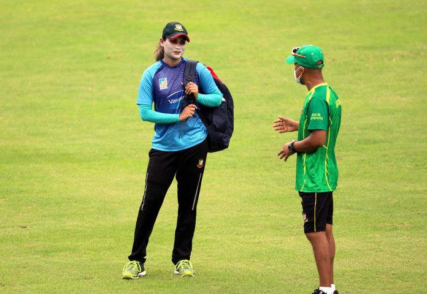
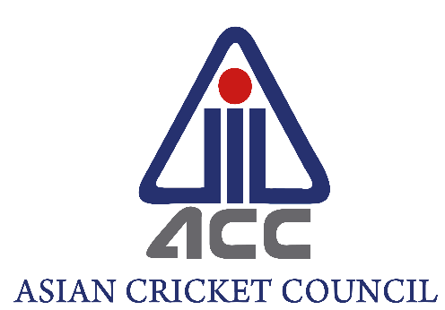

Bangladesh Team Skill Camp : COVID-19 Test Report
Out of the 27 cricketers for the Bangladesh Team Skill Camp tested on 18 and 19 September 2020, two cases have been identified as ‘borderline negative’ with one of them showing classical covid-19-like symptoms.
As per the Covid-19 management guideline and to maintain Bio-Secure Environment standards, the symptomatic individual along with all the players who have been in close contact with him recently, have been isolated until the next test on 22 September.

BCB to announce Women Team head coach in September
Bangladesh Cricket Board’s (BCB) Women Wing will announce the new head coach for the Tigress in the upcoming month. Earlier BCB did not renew the contract with the ex coach Anju Jain following the disappointing Women’s T20 World Cup campaign.Chairman of Women Wing, Shafiul Islam Chowdhury confirmed the appointment of the new coach for Women team. “We were searching for a new coach in the last few months. Now we are hopeful to appoint a new coach in the later part of next month. We believe the new coach will do well.”Apart from appointing the new head coach BCB also increase the match for the Women team players. Al-rounder Jahanara Alam expressed her delight for the news as she believed it will bring positive change in the Women’s cricket around the country.“Its a very good news for us. I feel so happy to know that our match fee is going to increase as it suggests we are doing well in the filed and board is happy with our performance in the recent years. I feel it will bring more girls in the game and also change the social perception. Families will also show more interest for the Women’s cricket.”
Media Release : Craig McMillan unable to take up Bangladesh Team role due to loss in family
Former New Zealand batsman was appointed batting consultant for Tour of Sri Lanka 2020Former New Zealand batsman Craig McMillan, who had been appointed Bangladesh batting consultant for the Tour of Sri Lanka 2020, has informed the BCB that he was not able to undertake the role due to a loss in the family.BCB CEO Nizam Uddin Chowdhury said: “Craig has communicated to us that his father has passed away recently and therefore it would not be possible for him to take up the batting consultant’s position of the National Team for the upcoming tour at this moment of grief. We fully understand his situation. Our sympathies are with Craig and his family during this difficult time.”

ACC Media Release : Asia Cup 2020 postponed
The Executive Board of the ACC has met on multiple occasions to evaluate the impact of the COVID-19 pandemic on the Asia Cup tournament scheduled in September 2020.It may also be noted that the hosts for the Asia Cup 2020, Pakistan Cricket Board (PCB), has exchanged hosting rights for the tournament with Sri Lanka Cricket (SLC). Through this arrangement, the SLC will now host the rescheduled Asia Cup expected in June 2021 while the PCB will host the Asia Cup 2022.